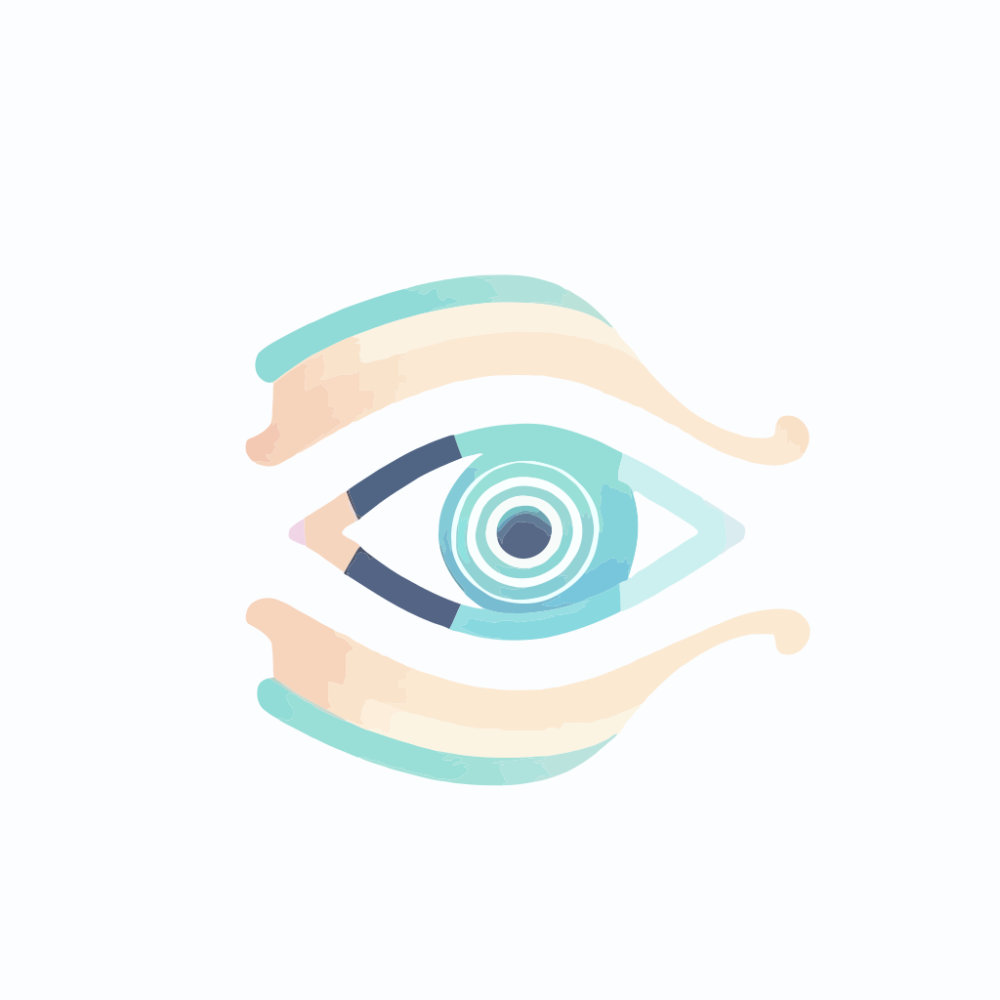

<ion-menu contentId="main-content" type="overlay" swipeGesture="false">
  <ion-content>
    <ion-list id="inbox-list">
      <ion-list-header>
        
      </ion-list-header>
      <ion-menu-toggle auto-hide="false">
        <ion-item routerDirection="root" [routerLink]="'dashboard'" lines="none" routerLinkActive="selected">
          <ion-icon aria-hidden="true" slot="start" name="home"></ion-icon>
          <ion-label>Inicio</ion-label>
        </ion-item>

        <ion-item *ngIf="this.roleUser === 'Enfermero' || this.roleUser === 'Doctor' || this.roleUser === 'Admin'"
          routerDirection="root" [routerLink]="'app/profile'" lines="none" routerLinkActive="selected">
          <ion-icon aria-hidden="true" slot="start" name="person"></ion-icon>
          <ion-label>Perfil</ion-label>
        </ion-item>

        <ion-item *ngIf="this.roleUser === 'Enfermero'" routerDirection="root" [routerLink]="'history-dignostic'"
          lines="none" routerLinkActive="selected">
          <ion-icon aria-hidden="true" slot="start" name="receipt"></ion-icon>
          <ion-label>Pacientes</ion-label>
        </ion-item>

        <ion-item *ngIf="this.roleUser === 'Admin'" routerDirection="root" [routerLink]="'ControlDoctors'" lines="none"
          routerLinkActive="selected">
          <ion-icon aria-hidden="true" slot="start" name="fitness"></ion-icon>
          <ion-label>Doctor</ion-label>
        </ion-item>

        <ion-item *ngIf="this.roleUser === 'Admin'" routerDirection="root" [routerLink]="'admin-nurses'" lines="none"
          routerLinkActive="selected">
          <ion-icon aria-hidden="true" slot="start" name="medical"></ion-icon>
          <ion-label>Enfermeras</ion-label>
        </ion-item>

        <ion-item *ngIf="this.roleUser === 'Doctor'" routerDirection="root" [routerLink]="'doctor-view'" lines="none"
          routerLinkActive="selected">
          <ion-icon aria-hidden="true" slot="start" name="people"></ion-icon>
          <ion-label>Historial médico</ion-label>
        </ion-item>

      </ion-menu-toggle>


    </ion-list>
    <ion-item>
      <ion-icon slot="start" ios="exit-outline" md="exit-sharp"></ion-icon>
      <ion-label (click)="Logout()">Cerrar Sesi&oacute;n</ion-label>
    </ion-item>
  </ion-content>


</ion-menu>